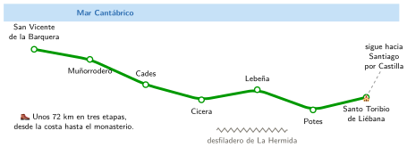
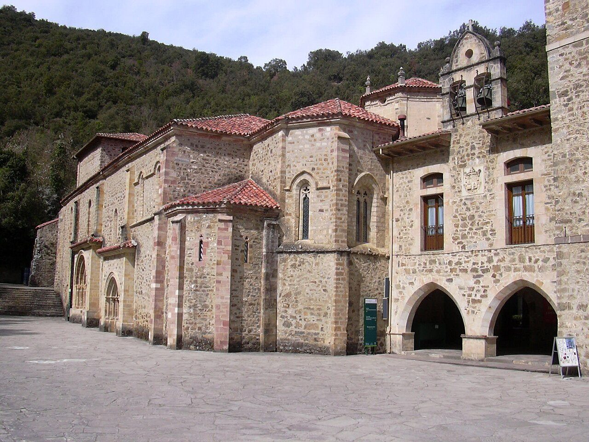

El Camino Lebaniego
Criterios: PC 3.1, PC 4.1, PC 7.1
🤔 Pienso5 min
Qué hago aquí: Piensa un momento y contesta con lo que ya sabes. No pasa nada si no lo sabes: es para empezar.
¿Conoces a alguien que haya hecho el Camino de Santiago? ¿Por qué lo hizo? ¿Qué te contó?
📖 Leo y aprendo15 min
Qué hago aquí: Lee despacio, mira los dibujos y los ejemplos, y quédate con la idea clave del final.
El Camino Lebaniego es el camino de peregrinación que lleva hasta el monasterio de Santo Toribio de Liébana, cerca de Potes. Allí se guarda el Lignum Crucis más grande que se conserva: según la tradición, un trozo de la cruz de Cristo traído desde Jerusalén.


Foto: David de Obregon Sierra · CC BY-SA 4.0 · Sto Toribio de Liebana.jpg
El camino más conocido sale de San Vicente de la Barquera, donde se separa del Camino de Santiago de la Costa, y sube por los valles hasta Liébana: unos 72 km que se suelen recorrer en tres etapas. Desde 2015, el Camino Lebaniego es Patrimonio de la Humanidad junto a los Caminos de Santiago del norte. Además de su valor religioso, es patrimonio por los paisajes, los pueblos, las iglesias y las tradiciones que atraviesa, y da vida a muchos pueblos pequeños.
✏️ Hago25 min
Qué hago aquí: Haz las actividades en orden. Empieza siempre por las básicas.
Explica qué es el Camino Lebaniego, dónde empieza, dónde termina y por qué se peregrina a Santo Toribio.
Explica cuándo hay Año Jubilar Lebaniego. Comprueba con un calendario qué día de la semana es el 16 de abril de este año y el del año que viene. ¿Cuál será el próximo Año Jubilar después de 2028?
El Camino Lebaniego es patrimonio por más motivos que el religioso. Explica tres de ellos.
Si el camino mide unos 72 km y un peregrino anda a unos 4 km/h, ¿cuántas horas de marcha necesita? Repártelas en tres etapas razonables.
En los años jubilares llegan miles de peregrinos. Explica dos beneficios para los pueblos del camino y dos problemas, y propón una medida para cada problema.
Compara el Camino Lebaniego con el Camino de Santiago: destino, reliquia, año santo y documento que se obtiene.
Diseña la etapa de un día del Camino Lebaniego: salida, llegada, kilómetros, dos lugares de patrimonio natural y dos de patrimonio cultural por los que pasa.
✏️ Puedes responder escribiendo, con un dibujo o un esquema, o contándolo en voz alta.
🚀 Amplío (si quieres saber más)
Qué hago aquí: ¿Has terminado? Lee la curiosidad o elige el reto. Es voluntario.
Investiga la Lebaniega y la credencial del peregrino: qué requisitos hay para conseguirla, dónde se sella y cuántas se entregaron en el último Año Jubilar. Explica qué papel tienen estos documentos para mantener viva la tradición.
✅ Compruebo5 min
Qué hago aquí: Contesta sin mirar la ficha y marca cómo lo llevas.